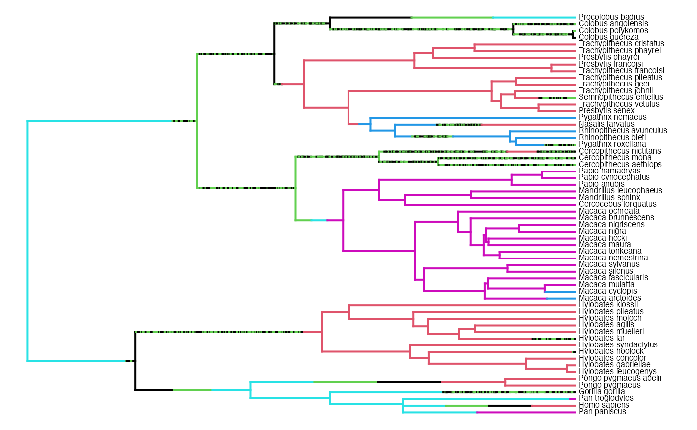

corHMMv2.1-vignette.RmdThe vignette is comprised of three sections, where we demonstrate all new extensions as well as other new and useful features:
Background information
Section 1 Default use of corHMM
Section 2 How to make and interpret custom models
Section 3 Estimating models when node states are fixed
#Background information
The original version of corHMM contained a number of
distinct functions for conducting analyses of discrete morphological
characters. This included the corHMM() function for fitting
a hidden rates model, which uses “hidden” states as a means of allowing
transition rates in a binary character to vary across a tree. In
reality, the hidden rates model falls within a general class of models,
hidden Markov models (HMM), that may also be applied to multistate
characters. So, whether the focal trait is binary or contains multiple
states, or whether the observed states represents a set of binary and
multistate characters, hidden states can be applied as a means of
allowing heterogeneity in the transition model. Choosing a model
specific to your question is of utmost importance in any comparative
method, and in this new version of corHMM we provide users
with the tools to create their own hidden Markov models.
Before delving into this further it may be worth showing a little of what is underneath the hood. To begin, consider a single binary character with states 0 and 1. If the question was to understand the asymmetry in the transition between these two states, the model, Q, would be a simple 2x2 matrix,
\[ Q= \begin{bmatrix} - & q_{0 \rightarrow 1} \\ q_{1 \rightarrow 0} & - \\ \end{bmatrix} \] This transition rate matrix is read as describing the transition rate from ROW to COLUMN. Thus, there are only two states, 0 and 1, and two transitions going from 0 \(\rightarrow\) 1, and from 1 \(\rightarrow\) 0. However, if we introduce a second binary character, the number of possible states you could observe is expanded to account for all the combination of states between two characters – that is, you could observe 00, 01, 10, or 11. To accommodate this, we need to expand our model such that it becomes a 4x4 matrix,
\[ Q = \begin{bmatrix} - & q_{00 \rightarrow 01} & q_{00 \rightarrow 10} & q_{00 \rightarrow 11}\\ q_{01 \rightarrow 00} & - & q_{01 \rightarrow 10} & q_{01 \rightarrow 11}\\ q_{10 \rightarrow 00} & q_{10 \rightarrow 01} & - & q_{10 \rightarrow 11}\\ q_{11 \rightarrow 00} & q_{11 \rightarrow 01} & q_{11 \rightarrow 10} & -\\ \end{bmatrix} \]
This model is considerably more complex, as the number of transitions in this rate matrix now goes from 2 to 12. However, with these models we often make a simplifying assumption that we do not allow for transitions in two states to occur at the same time. In other words, if a lineage is in state 00 it must first transition to either state 01 or 10, before transitioning to state 11. Therefore, we can simplify the matrix by removing these “dual” transitions from the model completely,
\[ Q = \begin{bmatrix} - & q_{00 \rightarrow 01} & q_{00 \rightarrow 10} & -\\ q_{01 \rightarrow 00} & - & - & q_{01 \rightarrow 11}\\ q_{10 \rightarrow 00} & - & - & q_{10 \rightarrow 11}\\ - & q_{11 \rightarrow 01} & q_{11 \rightarrow 10} & -\\ \end{bmatrix} \]
What we just described is the popular model of Pagel (1994), which tests for correlated evolution between two binary characters. But, one thing that is not obvious: the states in the model need not be represented as combinations of binary characters. For example, the focal character may be two characters, like say, flowers that are red with and without petals, and blue flowers with and without petals. One could just code it as a single multistate character, where 1=red petals, 2=red with no petals (i.e., sepals are red), 3=blue petals, and 4=blue with no petals (i.e., sepals are blue). The model would then be,
\[ Q = \begin{bmatrix} - & q_{1 \rightarrow 2} & q_{1 \rightarrow 3} & q_{1 \rightarrow 4}\\ q_{2 \rightarrow 1} & - & q_{2 \rightarrow 3} & q_{2 \rightarrow 4}\\ q_{3 \rightarrow 1} & q_{3 \rightarrow 2} & - & q_{3 \rightarrow 4}\\ q_{4 \rightarrow 1} & q_{4 \rightarrow 2} & q_{4 \rightarrow 3} & -\\ \end{bmatrix} \]
Notice it is the same as before, but the states are transformed from binary combinations to a multistate character. As before, we may assume that transitions in two states cannot occur at the same time and remove the “dual” transitions.
\[ Q = \begin{bmatrix} - & q_{1 \rightarrow 2} & q_{1 \rightarrow 3} & -\\ q_{2 \rightarrow 1} & - & - & q_{2 \rightarrow 4}\\ q_{3 \rightarrow 1} & - & - & q_{3 \rightarrow 4}\\ - & q_{4 \rightarrow 2} & q_{4 \rightarrow 3} & -\\ \end{bmatrix} \]
Again, exactly the same.
The updated version of corHMM() now lets users transform
a set of characters into a single multistate character. This
means that two characters need not have the same number of character
states – that is, one trait could have four states, and the other could
be binary. We also allow any model to be expanded to accomodate an
arbitrary number of hidden states. Thus, corHMM() is
completely flexible and naturally contains rayDISC() and
corDISC() capabilities - standalone functions in previous
versions of corHMM that may have been mistaken as different
“methods.” As this vignette will show, they are indeed nested within a
broader class of HMMs.
To start, we’ll use the primate dataset from Pagel and Meade (2006)
that comes with corHMM:
set.seed(1985)
require(ape)
require(expm)
require(corHMM)
data(primates)
phy <- primates[[1]]
phy <- multi2di(phy)
data <- primates[[2]]
plot(phy, show.tip.label = FALSE)
data.sort <- data.frame(data[, 2], data[, 3], row.names = data[, 1])
data.sort <- data.sort[phy$tip.label, ]
tiplabels(pch = 16, col = data.sort[, 1] + 1, cex = 0.5)
tiplabels(pch = 16, col = data.sort[, 2] + 3, cex = 0.5, offset = 0.5)We have two characters each with two possible states: trait 1 is the absence (black) or presence (red) of estrus advertisement in females, and trait 2 is single male (green) or multimale (blue) mating system in primates.
The default use of corHMM() only requires that you
declare your phylogeny, your dataset, and the number
of rate categories (more detail about this later). We have
updated corHMM() to handle different types of input data.
Now to use corHMM(), the first column must be species names
(as in the previous version), but there can be any number of data
columns. If your dataset does have 2 or more columns of trait
information, each column is taken to describe a separate character. Note
that when the corHMM() call is used, the function
automatically determines all the unique character combinations
observed in the data set. In our primate example only 3 of the
4 possible combinations are observed, and so the model is constructed
accordingly. Also, dual transitions are automatically disallowed. In
other words, we expect that a species cannot go directly from estrus
advertisement being absent in a single male mating system to having
estrus advertisement in a multimale mating system. They must first
evolve either estrus advertisement or multimale mating system.
Let’s give this a try:
## MK_3state <- corHMM(phy = phy, data = data, rate.cat = 1)
load("corHMMResults.Rsave")
MK_3state##
## Fit
## -lnL AIC AICc Rate.cat ntax
## -41.90867 91.81735 92.54462 1 60
##
## Legend
## 1 2 3
## "0_0" "0_1" "1_1"
##
## Rates
## (1,R1) (2,R1) (3,R1)
## (1,R1) NA 0.01899834 NA
## (2,R1) 0.05663462 NA 0.02627072
## (3,R1) NA 0.01610455 NA
##
## Arrived at a reliable solutionWhen you run your corHMM object you are greeted with a
summary of the model. Your model fit is described by the log likelihood
(lnL), Akaike information criterion (AIC), and sample size corrected
Akaike information criterion (AICc). You are also given the number of
rate categories (Rate.cat) and number of taxa (ntax).
The Rates section of the output describes transition rates between states and are organized as a matrix. Again, the transition rate matrix is read as the transition rate from ROW to COLUMN. For example, if you were interested in the transition rate from State 1 (i.e., absence of estrus advertisement in a single male mating system) to State 2 (i.e., absence of estrus advertisement in a multimale mating system) you would be looking at the Row 1, Column 2, entry. For a time calibrated ultrametric tree, these rates will depend on the age of your phylogeny.
You may also notice that corHMM() printed a state legend
to the screen. Thus, you can obtain the exact coding for each species in
an augmented dataframe provided by the corHMM() results
object itself. This dataframe uses the initial user data to create
columns that corresponds to how each species was represented in
corHMM():
head(MK_3state$data.legend)## sp d
## 1 Cercocebus_torquatus 3
## 2 Cercopithecus_aethiops 2
## 3 Cercopithecus_mona 1
## 4 Cercopithecus_nictitans 1
## 5 Colobus_angolensis 2
## 6 Colobus_guereza 1Alternatively, a user can supply their dataset to getStateMat4Dat,
which outputs a legend that is consistent with the corHMM()
function. The other output is an index matrix (or rate matrix) that
describes which rates are to be estimated in corHMM(). We
provide an in-depth discussion about this part of the index matrix
later:
getStateMat4Dat(data)## $legend
## 1 2 3
## "0_0" "0_1" "1_1"
##
## $rate.mat
## (1) (2) (3)
## (1) 0 2 0
## (2) 1 0 4
## (3) 0 3 0Finally, interpreting a Markov matrix can be difficult, especially when you’re just starting out. This problem is compounded when users begin to apply the more complex hidden Markov models (i.e. setting rate.cat > 1). To help users, we have implemented a new plotting function:
plotMKmodel(MK_3state)This function uses a corHMM object (which is the result
of running corHMM()) or a custom rate matrix (discussed in
a later section) to plot the model in two parts. On the left is a ball
and stick diagram that depicts the state transitions. On the right is a
simplified rate matrix that contains rounded values from the solution
output of corHMM(). The colors of the arrows correspond to
the magnitude of the rates.
The final new plotting tool we have made available to users is a
stochastic character mapping function, makeSimmap
(Bollback, 2006). We can use makeSimmap to create a
character history for any corHMM model and then use
plotSimmap (from the popular R-package, phytools) to plot
the output.
phy = MK_3state$phy
data = MK_3state$data
model = MK_3state$solution
model[is.na(model)] <- 0
diag(model) <- -rowSums(model)
# run get simmap (can be plotted using phytools)
simmap <- makeSimmap(tree = phy, data = data, model = model, rate.cat = 1, nSim = 1,
nCores = 1)
# we import phytools plotSimmap for plotting
phytools::plotSimmap(simmap[[1]], fsize = 0.5)## no colors provided. using the following legend:
## 0_0 0_1 1_1
## "black" "#DF536B" "#61D04F"The major difference between this version of corHMM and
previous versions is allowing models of any number of states and any
number of hidden rate categories (hidden rate categories will be
explained in more depth in section 2). Running a hidden Markov
model (HMM) only requires assigning a value greater than 1 to the
rate.cat input. Below, we have assigned 2 rate categories to the data
from above:
## HMM_3state <- corHMM(phy = phy, data = data, rate.cat = 2, model = "SYM", get.tip.states = TRUE)
HMM_3state##
## Fit
## -lnL AIC AICc Rate.cat ntax
## -41.54993 95.09986 96.68477 2 60
##
## Legend
## 1 2 3
## "0_0" "0_1" "1_1"
##
## Rates
## (1,R1) (2,R1) (3,R1) (1,R2) (2,R2) (3,R2)
## (1,R1) NA 8.98935353 NA 0.039272357 NA NA
## (2,R1) 8.98935353 NA 0.03045584 NA 0.039272357 NA
## (3,R1) NA 0.03045584 NA NA NA 0.03927236
## (1,R2) 0.01746178 NA NA NA 0.000000001 NA
## (2,R2) NA 0.01746178 NA 0.000000001 NA 0.01176923
## (3,R2) NA NA 0.01746178 NA 0.011769228 NA
##
## Arrived at a reliable solutionModels with more states (larger state space) take longer to estimate
because the number of transition rates increases. Hidden rate models
further expand state space. For example, adding a second rate category
incerases the number of transition rates from 4 to 10 (if the model is
left as the default “ARD”). In section 1.1 we left our parameters
unconstrained. We estimated all transisions as independent and allowed
for transitions from all states to any other state. However, we can
constrain a model in corHMM in two different ways. The
easiest way is to set the model to either “SYM” or “ER”. This is what
we’ve done for the HMM_3state model above. By setting model = “SYM”, we
have forced the transition rates between any two states to be equal. In
comparison, model = “ER” constrains all transition rates between states
to be the same. Finally, model = “ARD” (the default) allows all
transition rates to be independently estimated. Although “ER” and “SYM
are common restrictions, it is often more useful to manually restrict
your model to match a biological hypothesis (which is described in the
next section). Finally, we set get.tip.states to be true because it is
necessary for simmaps.
Interpreting the estimated rate matrix for this hidden Markov model
is intimidating. But, the same principles of interpreting the transition
rate matrices apply – that is, you still read rates from row to column.
However, there is the added complexity of transitions among the
different rate categories (as represented by R1 and R2).
plotMKmodel() will plot the underlying structure of model
in discrete parts. In the following example, the first 2 panels show how
observed states transition within each rate category, and the last panel
shows transitions among the different rate classes:
plotMKmodel(HMM_3state, display = "row")And again we can plot the simmap of this corHMM result.
It is important to note that a character history not only generates
hypotheses about ancestral states, but is an effective way to visualize
the tempo of evolution. This is particularly important for HMMs where
rates of evolution can vary drastically across the tree.
# get simmap inputs from corhmm outputs
phy = HMM_3state$phy
data = HMM_3state$data
model = HMM_3state$solution
model[is.na(model)] <- 0
diag(model) <- -rowSums(model)
# run get simmap (can be plotted using phytools)
simmap <- makeSimmap(tree = phy, data = data, model = model, rate.cat = 2, nSim = 1,
nCores = 1)
# we import phytools plotSimmap for plotting
phytools::plotSimmap(simmap[[1]], fsize = 0.5)## no colors provided. using the following legend:
## (0_0,R1) (0_0,R2) (0_1,R1) (0_1,R2) (1_1,R1) (1_1,R2)
## "black" "#DF536B" "#61D04F" "#2297E6" "#28E2E5" "#CD0BBC"
At its core, the purpose of a rate matrix (i.e.,
rate.mat) is to indicate to corHMM which
parameters are being estimated. It specifies to corHMM()
which rates in the matrix are being estimated and if any of them are
expected to be identical.
A custom rate matrix allows you to specify explicit hypotheses. For example, such an approach allows for tests of evolution of traits in a particular order, tests of different rates of evolution in different clades, or tests of the presence of hidden precursors before a state can evolve.
Let’s start by using the getStateMat4Dat() function to
get a generic rate.mat object:
LegendAndRateMat <- getStateMat4Dat(data)
RateMat <- LegendAndRateMat$rate.mat
RateMat## (1) (2) (3)
## (1) 0 2 0
## (2) 1 0 4
## (3) 0 3 0The numbers in this matrix are not rates, they are used to index the
unique parameters to be estimated by corHMM(). Each
distinct number is a parameter to be estimated independently from all
others. Let’s manually create the symmetric model we used in secion 1.2.
In the symmetric model we want transitions to a state to be the
same as from that state. This means that (1) \(\rightarrow\) (2) & (2) \(\rightarrow\) (1) are equal AND that (3)
\(\rightarrow\)(2) and (2) \(\rightarrow\) (3) are equal. In other
words, based on the rate.mat above, we want parameters 1
& 2 to be equal and we want parameters 3 & 4 to be equal as
shown below:
pars2equal <- list(c(1, 2), c(3, 4))
StateMatA_constrained <- equateStateMatPars(RateMat, pars2equal)
StateMatA_constrained## (1) (2) (3)
## (1) NA 1 NA
## (2) 1 NA 2
## (3) NA 2 NATo manually create a symmetric model, we used the
equateStateMatPars() function, in which the first argument is the rate
matrix being modified (i.e., rate.mat object) and second argument is
list of the parameters to be equated. One thing to note is that you must
have the appropriate number of rate categories since a user rate matrix
is not duplicated or changed by corHMM(). Thus, this custom
model can only be used if we set rate.cat=1 since that is the
appropriate number of rate categories. We can now provide this
customized rate.mat to corHMM():
## MK_3state_customSYM <- corHMM(phy = phy, data = data, rate.cat = 1, rate.mat = StateMatA_constrained)
MK_3state_customSYM##
## Fit
## -lnL AIC AICc Rate.cat ntax
## -44.36715 92.7343 92.94482 1 60
##
## Legend
## 1 2 3
## "0_0" "0_1" "1_1"
##
## Rates
## (1,R1) (2,R1) (3,R1)
## (1,R1) NA 0.02569597 NA
## (2,R1) 0.02569597 NA 0.01968806
## (3,R1) NA 0.01968806 NA
##
## Arrived at a reliable solutionFrom a technical standpoint, hidden Markov models have a hierarchical structure that can be broken down into two components: a “state-dependent process” and an unobserved “parameter process” (Zucchini et al. 2017). In comparative biology, the standard “state-dependent process” model is a continuous-time Markov chain. The observed states could be any discretized trait such as presence or absence of extrafloral nectaries (Marazzi et al. 2012), woody or herbaceous growth habit (Beaulieu et al. 2013), or diet state across all animals (Roman-Palacios et al. 2019). However, a simple Markov process alone that assumes homogeneity through time and across taxa is often not adequate to capture the variation of real datasets (e.g. Beaulieu et al. 2013). One option is to say that the observed data is the product of several processes occurring in different parts of a phylogeny. The parameter process describes how several state-dependent processes relate to one another. Thus, observations are generated by a given state-dependent process depending on the state of the parameter process. It is initially unknown what the parameter process corresponds to biologically, hence the moniker “hidden” state.
If you wanted to add hidden rate categories, you need to know: (1)
the dynamics within each rate category (state-dependent
processes), and (2) transitions between the different rate
classes (parameter process). We begin by constructing two
within rate category rate.mat objects (R1 and R2).
In R1, we assume a drift-like hypothesis where all transition rates are
equal. In R2, we assume that the combination of estrus advertisement and
multimale mating systems are not lost once they evolve:
RateCat1 <- getStateMat4Dat(data)$rate.mat # R1
RateCat1 <- equateStateMatPars(RateCat1, c(1:4))
RateCat1## (1) (2) (3)
## (1) NA 1 NA
## (2) 1 NA 1
## (3) NA 1 NA
RateCat2 <- getStateMat4Dat(data)$rate.mat # R2
RateCat2 <- dropStateMatPars(RateCat2, 3)
RateCat2## (1) (2) (3)
## (1) NA 2 NA
## (2) 1 NA 3
## (3) NA NA NAWith respect to transitions among the different rate
classes, we have implemented a separate matrix generator,
getRateCatMat(). By default, this function will assume that
all transitions among the specified number of rate classes occur
independently. In our example, we will generate a matrix that specifies
how transitions between R1 and R2 occur. Note that R1 and R2 could
represent a biologically-relevant, but unmeasured factor, such as, say,
temperate or tropical environments, island or mainland, presence or
absence of a third trait. Basically, it is everything and anything that
can influence the evolution of your observed characters.
For illustrative purposes, we will specify that the transition rate from R1 to R2 is the same as the rate from R2 to R1:
RateClassMat <- getRateCatMat(2) #
RateClassMat <- equateStateMatPars(RateClassMat, c(1, 2))
RateClassMat## R1 R2
## R1 NA 1
## R2 1 NAWe now group all of our rate classes together in a list. The first element of the list corresponds to R1, the second to R2, etc.
StateMats <- list(RateCat1, RateCat2)
StateMats## [[1]]
## (1) (2) (3)
## (1) NA 1 NA
## (2) 1 NA 1
## (3) NA 1 NA
##
## [[2]]
## (1) (2) (3)
## (1) NA 2 NA
## (2) 1 NA 3
## (3) NA NA NAWe now have all the components necessary to create the full model
using the getFullMat() function. This function requires
that the first input be a list of the within rate class matrices and the
second argument be the among rate class matrices:
FullMat <- getFullMat(StateMats, RateClassMat)
FullMat## (1,R1) (2,R1) (3,R1) (1,R2) (2,R2) (3,R2)
## (1,R1) 0 1 0 5 0 0
## (2,R1) 1 0 1 0 5 0
## (3,R1) 0 1 0 0 0 5
## (1,R2) 5 0 0 0 3 0
## (2,R2) 0 5 0 2 0 4
## (3,R2) 0 0 5 0 0 0Even though we created this larger index matrix from individuals
components, we may not be sure it’s exactly what we want. We can use
plotMKmodel() to take a look at the model setup
before running the analysis. Here’s an example function
call:
plotMKmodel(FullMat, rate.cat = 2, display = "row", text.scale = 0.7)Since this is the model we intended on making, we can run
corHMM() with our custom matrix:
## HMM_3state_custom <- corHMM(phy = phy, data = data, rate.cat = 2, rate.mat = FullMat,
## node.states = "none")
HMM_3state_custom##
## Fit
## -lnL AIC AICc Rate.cat ntax
## -42.23859 94.47717 95.58828 2 60
##
## Legend
## 1 2 3
## "0_0" "0_1" "1_1"
##
## Rates
## (1,R1) (2,R1) (3,R1) (1,R2) (2,R2) (3,R2)
## (1,R1) NA 4.93699136 NA 0.01009128 NA NA
## (2,R1) 4.93699136 NA 4.93699136 NA 0.010091278 NA
## (3,R1) NA 4.93699136 NA NA NA 0.01009128
## (1,R2) 0.01009128 NA NA NA 0.009154181 NA
## (2,R2) NA 0.01009128 NA 0.04692934 NA 0.01252610
## (3,R2) NA NA 0.01009128 NA NA NA
##
## Arrived at a reliable solutionWe may plot the resulting parameter estimates as before:
plotMKmodel(HMM_3state_custom, display = "row", text.scale = 0.7)A lot of these new capabilities in corHMM were inspired
by our current project examining the ancestral habitat during primary
endosymbiosis. In our model, we have three possible habitats: marine,
freshwater, and terrestrial. Our very large phylogeny of green plants
contains many species with a diverse range of life histories. For
example, cyanobacteria can move freely between all of these states,
whereas some species may move between terrestrial and marine through
freshwater. Some species may even move freely between aquatic states,
but once they become terrestrial they are stuck there. In this section
we will demonstrate how to create a custom hidden Markov model which
satisfies all of these requirements.
To do this we will use a simulated a dataset that contains these 3 states:
## sp d
## 1 s7 Freshwater
## 2 s14 Marine
## 3 s16 Marine
## 4 s17 Terrestrial
## 5 s18 Terrestrial
## 6 s21 Marine## Freshwater Marine Terrestrial
## 7 14 79As before, start off by getting a legend and rate matrix from this dataset:
MFT_LegendAndRate <- getStateMat4Dat(MFT_dat)
MFT_LegendAndRate## $legend
## 1 2 3
## "Freshwater" "Marine" "Terrestrial"
##
## $rate.mat
## (1) (2) (3)
## (1) 0 3 5
## (2) 1 0 6
## (3) 2 4 0Here, freshwater habitat will be State 1, marine habitat will be State 2,and terrestrial habitat will be State 3. Now, we need to create 3 different rate classes that are consistent with our hypotheses of how habitat changes occurs. We’ll say that rate class R1 is one in which lineages cannot leave a terrestrial habitat, rate class R2 will allow linneages to transition between marine and terrestrial only through freshwater, and rate class R3 will be unrestricted movement between the habitats.
For R1 we need terrestrial to be an absorbing state, meaning once terrestriality evolves it is not lost. Since 1 = freshwater, 2 = marine, and 3 = terrestrial, that means removing from (3) to (1) and from (3) to (2).
MFT_R1 <- dropStateMatPars(MFT_LegendAndRate$rate.mat, c(2, 4))
MFT_R1## (1) (2) (3)
## (1) NA 2 3
## (2) 1 NA 4
## (3) NA NA NAFor R2, we need to disallow transitions between terrestrial and marine. We disallow the positions (1,3) and (3,1) in the rate matrix. In this case, any lineage can move into freshwater and move out of freshwater, but they are not allowed to transition directly between terrestrial and marine habitats:
MFT_R2 <- dropStateMatPars(MFT_LegendAndRate$rate.mat, c(4, 6))
MFT_R2## (1) (2) (3)
## (1) NA 3 4
## (2) 1 NA NA
## (3) 2 NA NAFor R3, we allow all possible transitions to occur, which is the default matrix provided by getStateMat4Dat:
MFT_R3 <- MFT_LegendAndRate$rate.mat
MFT_R3## (1) (2) (3)
## (1) 0 3 5
## (2) 1 0 6
## (3) 2 4 0Let’s put all these matrices in a list,
MFT_ObsStateClasses <- list(MFT_R1, MFT_R2, MFT_R3)Since we only have 100 species in this example, let’s constrain our parameters a bit further and state that transitions between rate classes occur at the same rate:
MFT_RateClassMat <- getRateCatMat(3) # we have 3 rate classes
MFT_RateClassMat <- equateStateMatPars(MFT_RateClassMat, 1:6)Next, we put it all together into a corHMM compatible rate.mat:
MFT_FullMat <- getFullMat(MFT_ObsStateClasses, MFT_RateClassMat)
MFT_FullMat## (1,R1) (2,R1) (3,R1) (1,R2) (2,R2) (3,R2) (1,R3) (2,R3) (3,R3)
## (1,R1) 0 2 3 15 0 0 15 0 0
## (2,R1) 1 0 4 0 15 0 0 15 0
## (3,R1) 0 0 0 0 0 15 0 0 15
## (1,R2) 15 0 0 0 7 8 15 0 0
## (2,R2) 0 15 0 5 0 0 0 15 0
## (3,R2) 0 0 15 6 0 0 0 0 15
## (1,R3) 15 0 0 15 0 0 0 11 13
## (2,R3) 0 15 0 0 15 0 9 0 14
## (3,R3) 0 0 15 0 0 15 10 12 0That’s kind of difficult to interpret, so be sure to plot it out
using plotMKmodel()
plotMKmodel(MFT_FullMat, rate.cat = 3, display = "square", text.scale = 0.9)To run this model, we would only need to specify 1) the data, 2) the phylogeny, 3) this matrix, and 4) that this matrix has 3 rate categories:
## MFT_res.corHMM <- corHMM(phy = phy, data = MFT_dat, rate.cat = 3, rate.mat = MFT_FullMat,
## node.states = "none", root.p = "maddfitz")
MFT_res.corHMM##
## Fit
## -lnL AIC AICc Rate.cat ntax
## -56.60587 143.2117 148.926 3 100
##
## Legend
## 1 2 3
## "Freshwater" "Marine" "Terrestrial"
##
## Rates
## (1,R1) (2,R1) (3,R1) (1,R2) (2,R2) (3,R2)
## (1,R1) NA 0.000000001 0.000000001 4.857902197 NA NA
## (2,R1) 0.000000001 NA 14.208891381 NA 4.857902 NA
## (3,R1) NA NA NA NA NA 4.857902197
## (1,R2) 4.857902197 NA NA NA 84.755563 0.000000001
## (2,R2) NA 4.857902197 NA 0.000000001 NA NA
## (3,R2) NA NA 4.857902197 0.000000001 NA NA
## (1,R3) 4.857902197 NA NA 4.857902197 NA NA
## (2,R3) NA 4.857902197 NA NA 4.857902 NA
## (3,R3) NA NA 4.857902197 NA NA 4.857902197
## (1,R3) (2,R3) (3,R3)
## (1,R1) 4.8579022 NA NA
## (2,R1) NA 4.8579022 NA
## (3,R1) NA NA 4.857902197
## (1,R2) 4.8579022 NA NA
## (2,R2) NA 4.8579022 NA
## (3,R2) NA NA 4.857902197
## (1,R3) NA 0.5280562 0.000000001
## (2,R3) 0.4711517 NA 0.000000001
## (3,R3) 1.2064486 0.2364842 NA
##
## Arrived at a reliable solutionThe precursor model of Marazzi et al. (2012) marks the beginning of
HMMs being used in a phylogenetic comparative context. Marazzi et
al. (2012) were interested in locating putative evolutionary precursors
of plant extrafloral nectaries (EFNs). Specifically, there were 2
states, presence (1) or absence (0) of EFNs, but that only species with
an unobserved, hidden “precursor” trait could gain EFNs. Here we show
how you could design the canonical precursor model in
corHMM using custom rate matrices.
We will start by loading a simulated dataset of presence and absence of extrafloral nectaries a randomly generated birth-death tree:
head(Precur_Dat)## sp d
## s7 s7 0
## s14 s14 0
## s16 s16 0
## s17 s17 0
## s18 s18 1
## s21 s21 0Next, generate an observed states only matrix using the input single binary trait data set:
Precur_LegendAndMat <- getStateMat4Dat(Precur_Dat)
Precur_LegendAndMat## $legend
## 1 2
## "0" "1"
##
## $rate.mat
## (1) (2)
## (1) 0 2
## (2) 1 0Based on the legend, the absence of EFNs will be State 1 and the presence of EFNs will be State 2. For a precursor model the transitions between the two observed states, 1 and 2, are modulated by a third, hidden trait, which we will call a precursor. The precursor is represented by being in State 1 (lacking EFNs), but being in the “precursor rate class” (R2 in this case). In other words, if we observe that a species lacks EFN’s, we do not know if they also have the precursor (i.e., 1,R2) or not (i.e., 1,R1). We do know, however, that under a precursor model that if we observe EFN, they must always also have the precursor trait, and so the presence of EFNs is always (2,R2). So, we will use rate class R2 as a direct measurement of transitioning between presence and absence of EFNs.
The first rate class, R1, will represent character changes in the absence of the precursor, which is not possible without first gaining the “precursor”. So, we will generate the default matrix, then drop all possible transitions from this matrix:
Precur_R1 <- Precur_LegendAndMat$rate.mat
Precur_R1 <- dropStateMatPars(Precur_R1, c(1, 2))
Precur_R1## (1) (2)
## (1) NA NA
## (2) NA NAThe second rate class, R2, will represent how our character changes in the presence of the precursor. In this rate class, we expect that species can either gain or lose EFNs at the same rate:
Precur_R2 <- Precur_LegendAndMat$rate.mat
Precur_R2 <- equateStateMatPars(Precur_R2, c(1, 2))
Precur_R2## (1) (2)
## (1) NA 1
## (2) 1 NAFinally, we set up a matrix for that governs the transitions among the rate classes:
RateClassMat <- getRateCatMat(2) #
RateClassMat <- equateStateMatPars(RateClassMat, c(1, 2))
RateClassMat## R1 R2
## R1 NA 1
## R2 1 NAPutting them rate classes together we almost get the right model, but we need to remove one extra transition rate between that connects rate class R1 and R2 in the presence of EFNs, because, again, the precursor model assumes that EFNs can only be gained in rate class 1.
Precur_FullMat <- getFullMat(list(Precur_R1, Precur_R2), RateClassMat)
Precur_FullMat[c(4, 2), c(2, 4)] <- 0
Precur_FullMat## (1,R1) (2,R1) (1,R2) (2,R2)
## (1,R1) 0 0 2 0
## (2,R1) 0 0 0 0
## (1,R2) 2 0 0 1
## (2,R2) 0 0 1 0We now run corHMM() making sure to specify that we have
2 rate categories (or rate classes or hidden states - it’s all the
same).
Precur_res.corHMM <- corHMM(phy = phy, data = Precur_Dat, rate.cat = 2, rate.mat = Precur_FullMat,
root.p = "maddfitz")## State distribution in data:
## States: 1 2
## Counts: 57 43
## Beginning thorough optimization search -- performing 0 random restarts
## Finished. Inferring ancestral states using marginal reconstruction.## Warning in getInfoPerNode(obj$lik.anc.states, Q): NaNs produced
Precur_res.corHMM##
## Fit
## -lnL AIC AICc Rate.cat ntax
## -63.3243 130.6486 130.7723 2 100
##
## Legend
## 1 2
## "0" "1"
##
## Rates
## (1,R1) (2,R1) (1,R2) (2,R2)
## (1,R1) NA NA 0.000000001 NA
## (2,R1) NA NA NA NA
## (1,R2) 1e-09 NA NA 1.562531
## (2,R2) NA NA 1.562531494 NA
##
## Arrived at a reliable solutionLets say we had a dataset with multiple characters: 1) presence or absence of limbs, 2) presence or absence of fingers, 3) corporeal or incorporeal form. It could look something like this:
data(primates)
phy <- primates[[1]]
phy <- multi2di(phy)
data <- primates[[2]]
Limbs <- c("Limbs", "noLimbs")[data[, 2] + 1]
Fings <- vector("numeric", length(phy$tip.label))
Fings[which(Limbs == "Limbs")] <- round(runif(length(which(Limbs == "Limbs")),
0, 1))
Corpo <- rep("corporeal", length(phy$tip.label))
Ont_Dat <- data.frame(sp = phy$tip.label, limbs = Limbs, fings = Fings, corp = Corpo)
head(Ont_Dat)## sp limbs fings corp
## 1 Homo_sapiens noLimbs 0 corporeal
## 2 Pan_paniscus Limbs 1 corporeal
## 3 Pan_troglodytes Limbs 0 corporeal
## 4 Gorilla_gorilla Limbs 1 corporeal
## 5 Pongo_pygmaeus Limbs 0 corporeal
## 6 Pongo_pygmaeus_abelii Limbs 0 corporealPreviously, the user would have had to convert this dataset into a
format that could be read by the rayDISC() function. This
task previously involved taking all possible unique combinations and
creating a multistate character, but this version of
corHMM() will internally do this for you:
Ont_LegendAndMat <- getStateMat4Dat(Ont_Dat)
Ont_LegendAndMat## $legend
## 1 2 3
## "Limbs_0_corporeal" "Limbs_1_corporeal" "noLimbs_0_corporeal"
##
## $rate.mat
## (1) (2) (3)
## (1) 0 3 4
## (2) 1 0 0
## (3) 2 0 0Even though there were 3 binary characters (meaning 8 possible states), only 3 combinations were actually observed. This is because all of the species were corporeal and thus the incorporeal form didn’t factor into the matrix structure. The next thing to notice is that one of the potential states (No Limbs, Yes Fingers) is not present in the dataset and thus not included in the model. In addition, the transition from 3 (No Limbs, No Fingers) to 2 (Yes Limbs, Yes Fingers) is not allowed because it is impossible to have fingers without having limbs. Finally, all dual transitions have been removed.
## Ont_res.corHMM <- corHMM(phy = phy, data = Ont_Dat, rate.cat = 1, rate.mat = Ont_LegendAndMat$rate.mat,
## node.states = "none")Note that hidden states can be added to this model by following the examples above.
We also added the ability to fix any or all nodes in the input phylogeny while estimating a model. This new feature was inspired by a request from Scott Edwards, who was interested in whether the range of rates of flight gain and loss will result in the highest probability of a volant ancestor to flightless lineages. He ran a series of ancestral state reconstructions under a range of rates of gain and loss of flight. These ancestral state reconstructions focused on a single ancestor at a time (since each ancestor will have a slightly different set of parameters) and recorded the probability of a volant ancestor. These analyses are included in the supplemental of Sackton et al. (2019).
In this updated version of corHMM, a user can fix
anywhere from a single node in a tree to an entire reconstruction from,
say parsimony, and estimate the transitions rate. One can even obtain
the likelihood of a reconstruction based on a fixed set of rates. To
demonstrate, let’s start by running a simple analysis of a binary
character, but fixing the state of a single node in the the primate
tree. Specifically, we are going to fix the most recent common ancestor
(MRCA) of Gorilla gorilla and Homo sapiens as exhibiting estrus
advertisement (i.e., State 1). The first step is to determine the the
indices for each state:
data(primates)
phy <- primates[[1]]
phy <- multi2di(phy)
data <- primates[[2]]
getStateMat4Dat(data[, c(1, 2)])## $legend
## 1 2
## "0" "1"
##
## $rate.mat
## (1) (2)
## (1) 0 2
## (2) 1 0Here, index 2 represents the presence of estrus advertisement in the
model. The next step is to create a vector of node states. We start by
generating a string of NA of length equal to the number of
nodes plus the number of tips in the tree. The NA simply
tells corHMM() to ignore as these are nodes that are not
fixed. We then have to determine which node is the MRCA of Gorilla
gorilla and Homo sapiens:
label.vector <- rep(NA, Ntip(phy) + Nnode(phy))
homo_gorilla <- getMRCA(phy, tip = c("Homo_sapiens", "Gorilla_gorilla"))
homo_gorilla## [1] 64The node number should be 64. To set the state of the node, simply
replace the NA with the state of interest in the
label.vector, in this case with a 2, in the
64th element. To set the node labels, we will clip off the first 60
elements, as these represent the states of the tips, which we set
differently:
Plotting the tree allows users to visually check whether the right node was fixed:
plot(phy, cex = 0.5)
nodelabels(phy$node.label)From here simply input the tree object in
corHMM() as normal, but the option fix.nodes needs to be
set to TRUE:
## Warning in corHMM(phy, data[, c(1, 2)], model = "ER", rate.cat = 1, fixed.nodes
## = TRUE): Branch lengths of 0 detected. Adding 1e-5 to these branches.## State distribution in data:
## States: 1 2
## Counts: 39 21
## Beginning thorough optimization search -- performing 0 random restarts
## Finished. Inferring ancestral states using marginal reconstruction.We can then compare the fit of this model with another model where the same node is fixed to lacking estrus advertisement:
label.vector[homo_gorilla] <- 1
phy$node.label <- label.vector[-c(1:Ntip(phy))]
fix.node64.noestrus <- corHMM(phy, data[, c(1, 2)], model = "ER", rate.cat = 1,
fixed.nodes = TRUE)## Warning in corHMM(phy, data[, c(1, 2)], model = "ER", rate.cat = 1, fixed.nodes
## = TRUE): Branch lengths of 0 detected. Adding 1e-5 to these branches.## State distribution in data:
## States: 1 2
## Counts: 39 21
## Beginning thorough optimization search -- performing 0 random restarts
## Finished. Inferring ancestral states using marginal reconstruction.
fix.node64.noestrus##
## Fit
## -lnL AIC AICc Rate.cat ntax
## -22.22758 46.45517 46.52413 1 60
##
## Legend
## 1 2
## "0" "1"
##
## Rates
## (1,R1) (2,R1)
## (1,R1) NA 0.008338391
## (2,R1) 0.008338391 NA
##
## Arrived at a reliable solutionThis comparison shows that the model where the MRCA of Gorilla gorilla and Homo sapiens is assumed to have exhibited estrus advertisement requires higher rates, and produces a substantially worse likelihood, than the model that assumes the MRCA lacked estrus advertisement.
It is also possible to estimate transition rates where all nodes are
fixed in the tree. For example, what if one wanted to examine the fit of
a model where all nodes are fixed to according to a maximum parsimony
reconstruction. Here we will use phangorn for these
purposes. However, with phangorn there is the burden of
dealing with their unique phyDat format. To deal with this,
we implemented a function, ConvertPhangornReconstructions()
that will convert the phyDat formatted output into
something we can modify and input into corHMM().
Specifically, we can take the mpr.recon object from
phangorn and convert the output as a vector and add them as
node states in the phylogeny:
library(phangorn)
data.sort <- data.frame(data[, 2], row.names = data[, 1])
data.sort <- data.sort[phy$tip.label, ]
dat <- as.matrix(data.sort)
rownames(dat) <- phy$tip.label
dat <- phyDat(dat, type = "USER", levels = c("0", "1"))
mpr.recon <- ancestral.pars(phy, dat, type = c("MPR"))
mpr.recon.converted <- ConvertPhangornReconstructions(mpr.recon)
phy$node.label <- mpr.recon.converted[(Ntip(phy) + 1):length(mpr.recon.converted)]Plotting the tree shows the parsimony reconstruction:
plot(phy, cex = 0.5)
nodelabels(phy$node.label)Next, input the tree into corHMM() and obtain a rate
estimate for this reconstruction:
fixed.parsimony.recon <- corHMM(phy, data[, c(1, 2)], model = "ER", rate.cat = 1,
fixed.nodes = TRUE)## Warning in corHMM(phy, data[, c(1, 2)], model = "ER", rate.cat = 1, fixed.nodes
## = TRUE): Branch lengths of 0 detected. Adding 1e-5 to these branches.## State distribution in data:
## States: 1 2
## Counts: 39 21
## Beginning thorough optimization search -- performing 0 random restarts
## Finished. Inferring ancestral states using marginal reconstruction.
fixed.parsimony.recon##
## Fit
## -lnL AIC AICc Rate.cat ntax
## -53.46646 108.9329 109.0019 1 60
##
## Legend
## 1 2
## "0" "1"
##
## Rates
## (1,R1) (2,R1)
## (1,R1) NA 0.02951004
## (2,R1) 0.02951004 NA
##
## Arrived at a reliable solutionInterestingly, the parsimony reconstruction suggests a lot more change than if we estimated the states from the model itself.
Finally, if the model contains hidden states, the user needs to fix the state of the node based on the observed state only. Remember, since we cannot actually observe hidden states, we must treat the state of the node as ambiguous across all possible rate classes like we would a tip. Let’s run a quick example where we fix the MRCA of Gorilla gorilla and Homo sapiens as lacking estrus advertisement:
label.vector <- rep(NA, Ntip(phy) + Nnode(phy))
homo_gorilla <- getMRCA(phy, tip = c("Homo_sapiens", "Gorilla_gorilla"))
label.vector[homo_gorilla] <- 1
phy$node.label <- label.vector[-c(1:Ntip(phy))]
fix.node64.noestrus <- corHMM(phy, data[, c(1, 2)], model = "ARD", rate.cat = 2,
fixed.nodes = TRUE)## Warning in corHMM(phy, data[, c(1, 2)], model = "ARD", rate.cat = 2,
## fixed.nodes = TRUE): Branch lengths of 0 detected. Adding 1e-5 to these
## branches.## State distribution in data:
## States: 1 2
## Counts: 39 21
## Beginning thorough optimization search -- performing 0 random restarts
## Finished. Inferring ancestral states using marginal reconstruction.Now, if we print out the line corresponding to our fixed node,
fix.node64.noestrus$states[homo_gorilla - Ntip(phy), ]## (1,R1) (2,R1) (1,R2) (2,R2)
## 0.8747746 0.0000000 0.1252254 0.0000000there should be some uncertainty as to whether the absence of estrus advertisement is in R1 or R2. The total probability, however, of the node being in observed state 1 should sum to 1:
## [1] 1Beaulieu J.M., B.C. O’Meara, and M.J. Donoghue. 2013. Identifying hidden rate changes in the evolution of a binary morphologicalcharacter: the evolution of plant habit in campanulid angiosperms. Systematic Biology 62:725-737.
Marazzi B., Ane C., Simon M.F., Delgado-Salinas A., Luckow M., Sanderson M.J. 2012. Locating Evolutionary Precursors on a Phylogenetic Tree. Evolution. 66:3918-3930.
Pagel, M. 1994. Detecting correlated evolution on phylogenies: a general method for the comparative analysis of discrete characters. Proceedings of the Royal Society, B. 255:37-45.
Pagel, M., and A. Meade. 2006. Bayesian analysis of correlated evolution of discrete characters by reversible-jump Markov chain Monte Carlo. American Naturalist 167:808:825.
Roman-Palacios C., Scholl J.P., Wiens J.J. 2019. Evolution of diet across the animal tree of life. Evolution Letters. 3:339-347.
Sackton, T.B., P. Grayson, A. Cloutier, Z. Hu, J.S. Liu, N.E. Wheeler, P.P. Gardner, J.A. Clarke, A.J. Baker, M. Clamp, and S.V. Edwards. 2019. Convergent regulatory evolution and loss of flight in paleognathous birds. Science 364:74-78.
Zucchini W., MacDonald I.L., Langrock R. 2017. Hidden Markov models for time series: an introduction using R. Chapman and Hall/CRC.